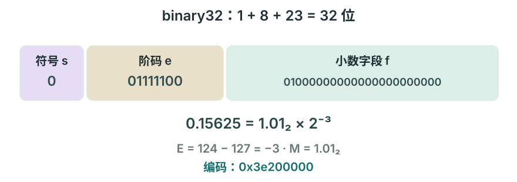
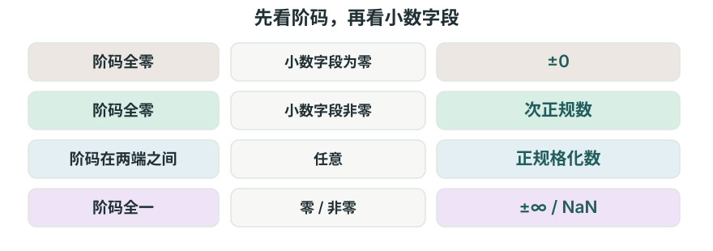
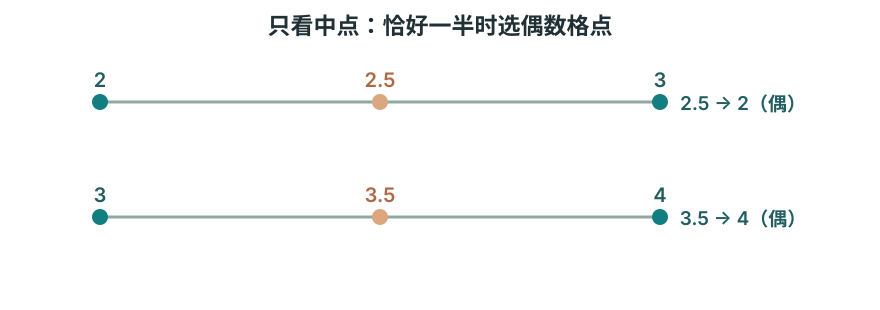

计算机系统 · 信息表示 / 03
为什么浮点数不是“带小数点的整数”？
在十进制里，0.1 是一个再普通不过的小数；在二进制里，它却像十进制的 1/3 一样无限循环。计算机必须在有限的比特里做出取舍：保留多大范围，又留下多少有效数字？
本章聚焦 IEEE 754 的 binary32 / binary64 和通常的最近值、偶数优先舍入；硬件环境、编译选项和非默认舍入模式可能影响实验表现。
3.1 一种科学记数法：符号、指数和有效数字
十进制的 6.02 × 10²³ 把“有效数字”与“尺度”分开；二进制浮点采用同样思想。一个有限非零值由符号 s、有效数 M 与指数 E 描述：
binary32 用 1 位存符号、8 位存阶码字段、23 位存小数字段；binary64 则分别是 1、11、52 位。它们的精度分别为24 位和53 位二进制有效位（正规格化数有一个隐含的前导 1），不要把“23 位小数字段”误说成“只有 23 位有效精度”。

0.15625 = 0.00101₂ = 1.01₂ × 2⁻³。指数字段是 −3 + 127 = 124，整个 binary32 位串是 0x3e200000。| 格式 | 符号位 | 阶码位 | 小数字段 | 偏置 Bias | 有效精度 |
|---|---|---|---|---|---|
| binary32 | 1 | 8 | 23 | 127 | 24 位 |
| binary64 | 1 | 11 | 52 | 1023 | 53 位 |
对正规格化有限数，阶码字段 e 位于 1…254（binary32），有 E = e − 127 与 M = 1 + f / 2²³。这种“隐含首位 1”的办法，把有限的存储预算留给更多精度。
3.2 当指数为全 0 或全 1：保留给边界与特殊值
指数不是把所有二进制编码都用于普通数值。当阶码字段全零时，除带符号零外，还能表示次正规数（subnormal）：此时 E = 1 − Bias，前导有效位变成 0。这是为了让数值在趋近零时不突然从最小正规格化数跳到零。

| 阶码字段 | 小数字段 | 类别 / binary32 示例 |
|---|---|---|
| 全 0 | 全 0 | +0 或 −0（由符号位决定） |
| 全 0 | 非 0 | 次正规数；最小正值 2⁻¹⁴⁹ |
| 介于两端 | 任意 | 正规格化有限数；最小正值 2⁻¹²⁶ |
| 全 1 | 全 0 | +∞ 或 −∞ |
| 全 1 | 非 0 | NaN（非数） |
不要将 NaN 理解成“一个极大的数”；它表示特定无效运算的结果。在 IEEE 算术中 NaN == NaN 为假，而 +0 == -0 为真，尽管两个零的符号编码不同。无穷大、NaN 的产生、异常标志以及舍入模式还受浮点环境与语言实现约束。
3.3 舍入不是“直接砍掉后面的位”
算出的真实数值经常位于两个可表示数之间。默认的最近值、遇到正中间取偶数尾位（roundTiesToEven）会选择更近者；若恰好等距，则选择最低有效位为 0 的候选表示。这样可减少长期重复舍入时某一方向的系统偏差。IEEE 754 还定义朝零、朝正无穷和朝负无穷等舍入方向。

另一个后果是浮点加法一般不满足结合律。例如在 binary64、最近偶数舍入且不采用重新结合优化时，(1e16 + -1e16) + 1 可得到 1，而 1e16 + (-1e16 + 1) 可得到 0。括号看似只改变顺序，实则改变了每一步的舍入位置。
3.4 0.1 + 0.2 与 0.3：答案还要看精度
0.1 的二进制展开为无限循环小数；放进 binary64 时先舍入一次，随后加法还要舍入。常见 IEEE binary64 环境下，0.1 + 0.2 取到的数略大于 0.3 的表示，因此比较为假。但 binary32 的 0.1f + 0.2f == 0.3f 在通常环境下反而为真，因为这两条求值路径最终恰好落在同一个 binary32 格点上。
交互：看三个十进制值变成 binary32
按钮演示的是把单个十进制数转换为 32 位格式；它不直接模拟 CPU 的所有舍入环境。
#include <stdio.h>
int main(void) {
float af = 0.1f, bf = 0.2f, cf = 0.3f;
double ad = 0.1, bd = 0.2, cd = 0.3;
printf("float: %d %a %a\n", af + bf == cf,
(double)(af + bf), (double)cf);
printf("double: %d %.17g %.17g\n",
ad + bd == cd, ad + bd, cd);
}在常见 IEEE 环境与默认编译选项下，第一行的布尔结果为 1，第二行为 0，双精度分别约为 0.30000000000000004 和 0.29999999999999999。若使用了扩展精度、不同舍入模式或激进浮点优化，请以实际输出为准。打印 %a 能更直接地看到十六进制浮点格式。
3.5 从误差分析到安全比较
“永远不可以使用 ==”同样是错误的绝对化建议：检查某个整数是否被浮点格式精确表示、判断已知哨兵值，以及比较规范化后的同一编码，都可能合理。对于近似计算，应按业务的绝对误差、相对误差与量纲决定阈值；NaN 和无穷大需单独处理。
#include <math.h>
int nearly_equal(double a, double b,
double abs_tol, double rel_tol) {
if (isnan(a) || isnan(b)) return 0;
if (a == b) return 1; /* 同号无穷大、精确相等也包括在内 */
if (!isfinite(a) || !isfinite(b)) return 0;
if (abs_tol < 0 || rel_tol < 0) return 0;
return fabs(a - b) <= abs_tol +
rel_tol * fmax(fabs(a), fabs(b));
}这是方便学习的比较策略，不能不经分析就套用到任意数值算法。特别是求差本身可能溢出、阈值可能产生上溢，严谨的数值库需要更完整的边界处理。货币与会计系统通常选择按最小单位缩放的整数或明确舍入规则的十进制类型；不是因为“每笔交易必然丢一分钱”，而是因为需要可审计的十进制语义。
自测
为什么 binary32 的“23 位小数字段”却能拥有 24 位有效精度？当 exponent 全为 0 时，这条推导还能用吗？
查看答案
正规格化数隐含一个最高位 1，因此 23 个显式位加 1 个隐含位，总计 24 位；次正规数的隐含最高位变成 0，因此靠近零时有效精度逐步降低。
再推一步：两个结果相差多少个 ULP？
ULP（unit in the last place）表示某个数值附近相邻可表示浮点数之间的间距。对通常采用 IEEE 754 binary64 和最近值舍入的 Python 环境，0.1 + 0.2 比字面量 0.3 大恰好一个 ULP；它并非运算「随机不稳定」，而是两次舍入路径产生了不同的相邻数。
import math
computed = 0.1 + 0.2
literal = 0.3
print(computed.hex()) # 0x1.3333333333334p-2
print(literal.hex()) # 0x1.3333333333333p-2
print((computed - literal) / math.ulp(literal)) # 1.0ULP 不是通用的误差容忍度：接近零、跨数量级、含 NaN 或涉及累计舍入时，应按问题尺度设计绝对误差与相对误差测试。
技术深描 · 03 / 精确值与边界
0.1 在 binary64 里究竟等于哪个分数？
0.1 的 binary64 编码及其拆解。整数 3602879701896397 与分母 2⁵⁵ 是精确值，不是近似打印结果。图为教学示意。1/10 的二进制展开是无限循环小数，任何有限位宽都无法精确表示它。binary64 保留 53 位有效位，把 0.1 舍入到最近的可表示数，其编码为 0x3FB999999999999A，精确地等于分数 3602879701896397 / 2⁵⁵。
它比 1/10 大约 5.55×10⁻¹⁸，但小于此处半个 ULP，所以确实是最近值。继续向零方向看：最小正规格化数是 2⁻¹⁰²²，比它更小的量由次正规数承担，最小正次正规数是 2⁻¹⁰⁷⁴；跨过这个边界后有效精度逐步下降。
2⁻¹⁰⁷⁴，两者在数值上连续衔接。python3 examples/deep-ch01-04.py 03模型只做纯标准库的分数运算：用位段解码还原精确值，断言其等于上述分数，并验证最大次正规数与最小正规格化数的衔接。语料依据 IEEE 754 binary64 编码与 Python float.hex() 的诚实输出；模型是教学示意，不是对某个硬件舍入单元的测量。
带走什么？
浮点数用指数换取动态范围，用有效位预算限定相对精度；在零附近靠次正规数提供渐进过渡；每次舍入都可能改变后续运算。下一章进入 x86-64，看看这些数值与操作如何被机器指令搬运和计算。
资料与边界
参阅 CS:APP 3e 学生资源（第 2 章）、NIST DLMF §3.1：浮点格式与误差 与 Intel IEEE 754 舍入说明。课程自己的“第 3 章”对应教材第 2 章的浮点部分。